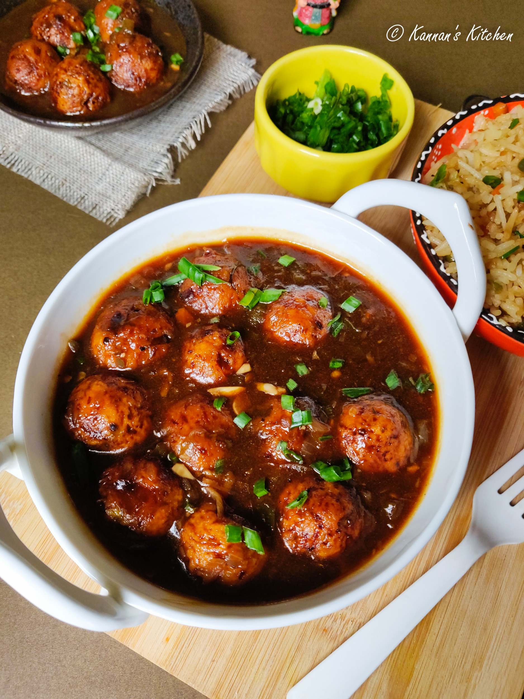

VEG BALL MANCHURIAN

A Manchurian is one of the most popular Indo-Chinese dishes in India. Manchurian Gravy pairs equally good with a simple noodle dish or even a flavorful fried rice. This post has the Veg Manchurian recipe, which is simply crispy fried mixed vegetable balls in a sweet, spicy, tangy, umami manchurian gravy or sauce. Try it, as I’m sure once you make it at home, you’ll forget the ones served at restaurants.
Ingredients
- 1 cup grated cabbage
- 1/2 cup grated carrots
- 1/4 cup chopped capsicum
- 1/4 cup chopped spring onions (white part)
- 2 tbsp cornflour, 3 tbsp all-purpose flour
- 1/2 tsp ginger-garlic paste, salt, pepper
- Oil (for frying)
- 1 tbsp oil, 1 tsp chopped garlic & ginger
- 2 green chilies, 1/4 cup spring onions
- 2 tbsp soy sauce, 1 tbsp ketchup, 1 tsp chili sauce
- 1 tsp vinegar, 1 tsp cornflour (dissolved)
- Salt, pepper, 1/2 cup water
- Spring onion greens
Steps
- Prepare the Veg Balls: In a large mixing bowl, combine grated vegetables (like cabbage, carrot, and beans), ginger-garlic paste, chopped green chilies, and cornflour. Add salt, pepper, and a pinch of garam masala. Mix everything well, shape the mixture into small balls, and deep fry them in hot oil until golden brown. Drain on paper towels.
- Prepare the Manchurian Sauce: In a pan, heat some oil, then sauté chopped onions, green chilies, and ginger-garlic paste. Add soy sauce, tomato ketchup, vinegar, and a bit of water. Mix well and bring the sauce to a boil.
- Combine the Veg Balls and Sauce: Add the fried veg balls to the sauce and toss gently to coat them. Simmer for a few minutes until the sauce thickens and the balls absorb the flavors.
- Garnish and Serve: Garnish the Veg Ball Manchurian with chopped spring onions and serve hot with rice or noodles.